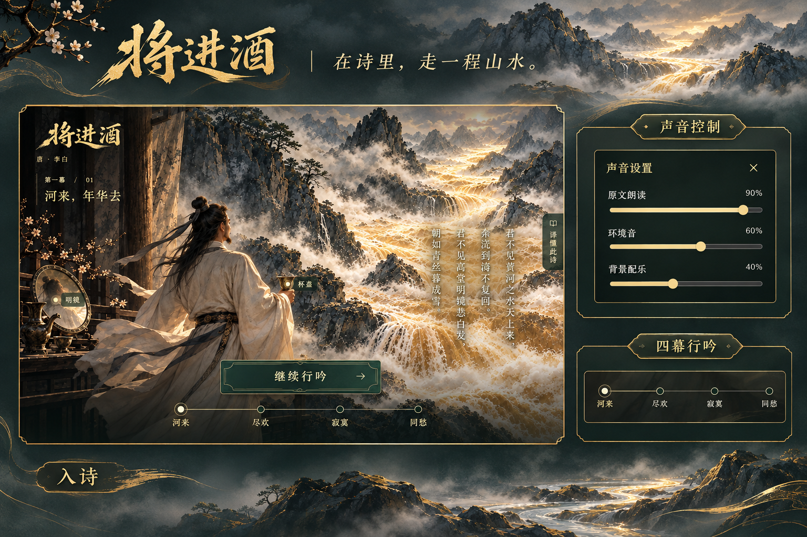
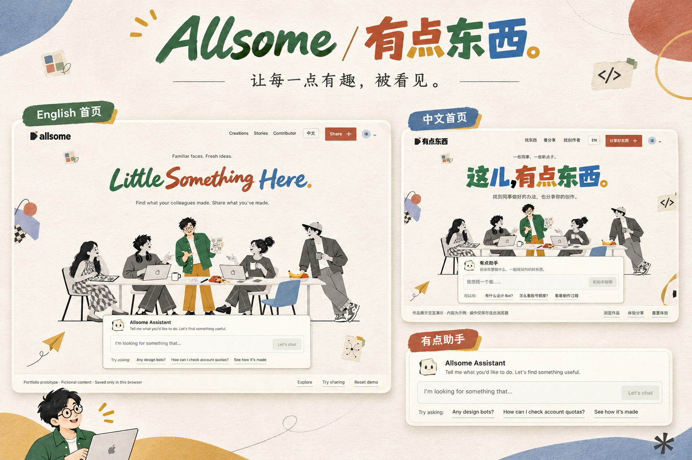
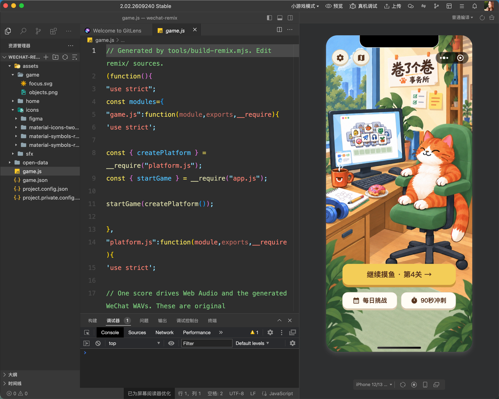

01 / Into the wild · national park experience exploration
Before walking into the rainforest, one wish moved me.

A conversation with documentary director Xiaobo Lü started this project. He launched "National Parks," hoping busy city people could get into the wild, and that children could get close to real nature. Many beautiful places aren't seen by the people around them. That made me want to build an online space that can be freely explored.
The Hainan tropical rainforest is the part I wanted most: walking in like a first-person game, hearing footsteps and wind through the leaves, turning suddenly to find a small animal. The on-screen experience should plant the idea of going to see the real wild.
Building scenes and interactions with AI, everything I ran into was beyond what I'd imagined: the texture looked plastic at first; later the trunks and leaves disconnected, the sky looked like a fake black cloth; the walking and wind didn't sync, and the surprise of meeting an animal didn't land.
You can now enter the Hainan scene, roam, and watch the footage — but it's still clearly short of a believable rainforest. I've kept these rough edges honestly; they're part of the creation.
02 / Jinjujiu · a classical-poetry sound-and-image experiment
If an ancient poem could be heard, seen — and joined.

Enter the poem ↗Seeing a tech colleague with kids use AI to make small teaching tools sparked a new interest: hard-to-understand knowledge can be presented in a more engaging way. I wanted to try ancient poetry — whether imagery, sound, and emotion could become a reading you can join.
I chose "Jinjujiu" (Li Bai's "Bring in the Wine"). With Codex I discussed how to divide the poem into scenes and how each unfolds, then used image generation, video, and voice tools to weave the reading and the poem's interaction together. As it went on, the questions got more concrete: how should the imagery answer the poem, how do sound and text coordinate, does the interaction interrupt the reading.
This time I didn't just hand a design to the next person in the process — I followed the idea all the way to something you can open. AI cleared a lot of the implementation hurdles, and let me personally check the joins between concept and finished piece.
The current piece is a four-scene experience; there's still room to polish. It makes people willing to come closer to the poem and linger a little longer — but it hasn't been tested in a classroom or measured for learning.
03 / Allsome · a space for sharing creations
The small things colleagues make deserve to be seen.

Open the interactive demo ↗After everyone started using AI, colleagues kept making small "things" — plugins, bots, skills, apps, local tools — hard to sum up in one word. Some solve work problems, some are pure interest. At Mid-Autumn Festival, when the office traded mooncake gift boxes, plush toys, backpacks, and mooncakes in the group chat, a colleague even built a "cake exchange" to make offers and trades easier.
There were a lot of these works, but the makers often had no place to show them. I started an unofficial in-company creator group so works had a place to be seen and people with ideas could find each other — that's how Allsome began.
With AI I pushed the product structure and interaction demo forward, turning colleagues from different roles — including myself — into cartoon characters gathered around creating together. The characters turn their heads to greet you. I deliberately left one chair empty, for the person looking at it.
What's done so far is a playable interactive prototype; the project hasn't launched, and the demo content shows the idea. That empty chair is what I hope this space can do in the future.
04 / Juan Le Ge Juan · an open-source match-3 remix
I love match-3 games, and wanted a version of my own.
I really enjoy playing "Happy Match." When I found an open-source match-3 project, I started thinking: with AI, could I remake it with my own style? That's how "Juan Le Ge Juan" came to be.
With Codex I redesigned the art, gameplay, and rules on top of the open-source project, adding office and "slacking off" humor. The base project saved me from building everything from zero, and let me focus on the experience I wanted to change — then check it by actually playing.
Along the way I first touched the WeChat mini-game development environment. Guided by Codex, I gradually learned the difference between mini-games and mini-programs, ran and debugged in the WeChat developer tool's simulator, then played it on my phone. Everything from setup to publishing, I learned by doing.
The video below is my personal version, played on a phone. For me the interesting part is also the process: I used to be just a player in games; now I can make my own idea and play it with my own hands.
This video can't be played right now. Open the video directly ↗
Getting familiar with a new dev environment
Running the mini-game in the WeChat developer tool and checking the actual screen.
WeChat developer tool

05 / Gesture particle planet · a visual and gesture interaction experiment
Reach out your hand, and try turning a planet.
This video can't be played right now. Open the video directly ↗
This experiment started from one image: a planet made of glowing orange particles, ringed by two white orbits. Reach out to turn it, pull it near or far — worth trying to make.
I used Gemini 3's Canvas mode on the web to push the implementation, describing the visuals and writing the interaction rules in: rotate the palm to change the viewing angle, fist moving away to zoom out, open palm moving closer to zoom in. Movement needs speed variation and easing, and a safe distance to keep the camera from passing through the planet.
Three.js provides the 3D rendering base, MediaPipe recognizes hand keypoints, and the app maps those into view changes. Interaction I used to think needed a special technical background is becoming something I can explore by hand, because of AI and these open-source tools.
The result runs in the browser. What's here is the live operation recording, so you can see the hand-to-screen correspondence directly. The experiment also confirmed something: a lot of complex capability is already built by others — what I can do on top is my own idea.